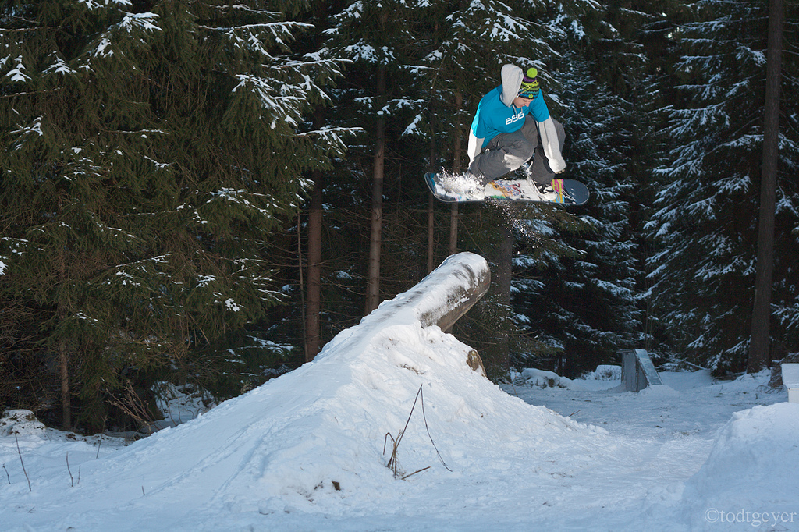

THERE'S NO BLUEPRINT TO SNOWBOARDING, YOU KNOW?
YOU CAN REALLY JUST MAKE YOUR OWN MARK.
-SAGE KOTSENBURG
Snowboarding is a recreational activity that involves descending a slope that is covered with snow while standing on a snowboard attached to a rider's feet. The snowboard is attached using a special boot set into a mounted binding.
The development of snowboarding was inspired by skateboarding, sledding, surfing and skiing. It was developed in the United States in the 1960s and became a Winter Olympic Sport in 1998. Its popularity (as measured by equipment sales) peaked in 2007 and has been in a decline since.
The first evidence of snowboarding dates back as early as the 1910s, when people would tie plywood or wooden planks from logs to their feet using fishing string and horse reins in order to steer themselves down hills.[citation needed] Modern snowboarding began in 1965 when Sherman Poppen, an engineer in Muskegon, Michigan, invented a toy for his daughters by fastening two skis together and attaching a rope to one end so they would have some control as she stood on the board and glided downhill. Dubbed the "snurfer" (combining snow and surfer) by his wife Nancy, the toy proved so popular among his daughters' friends that Poppen licensed the idea to a manufacturer, Brunswick Corporation, that sold about a million snurfers over the next decade. And, in 1966 alone over half a million snurfers were sold.[3] In the early 1970s, Poppen organized snurfing competitions at a Michigan ski resort that attracted enthusiasts from all over the country. One of those early pioneers was Tom Sims, a devotee of skateboarding (a sport born in the 1950s when kids attached roller skate wheels to small boards that they steered by shifting their weight). As an eighth grader in Haddonfield, New Jersey, in the 1960s, Sims crafted a snowboard in his school shop class by gluing carpet to the top of a piece of wood and attaching aluminum sheeting to the bottom. He produced commercial snowboards in the mid 70s. During this same time, Dimitrije Milovich—an American surfing enthusiast who had also enjoyed sliding down snowy hills on cafeteria trays during his college years in upstate New York—constructed a snowboard called "Winterstick," inspired by the design and feel of a surfboard. Articles about his invention in such mainstream magazines as Newsweek helped publicize the young sport. Also during this same period, in 1977, Jake Burton Carpenter, a Vermont native who had enjoyed snurfing since the age of 14, impressed the crowd at a Michigan snurfing competition with bindings he had designed to secure his feet to the board. That same year, he founded Burton Snowboards in Londonderry, Vermont. The "snowboards" were made of wooden planks that were flexible and had water ski foot traps. Very few people picked up snowboarding because the price of the board was considered too high at $38, but eventually Burton would become the biggest snowboarding company in the business.[4] In the spring of 1976 Welsh skateboarders Jon Roberts and Pete Matthews developed a Plywood deck with foot bindings for use on the Dry Ski Slope at the school camp, Ogmore-by-Sea, Wales. UK. Further development of the board was limited as Matthews suffered serious injury while boarding at Ogmore and access for the boarders declined following the incident. The 'deck' was much shorter than current snow boards. Bevelled edges and a convex, polyurethane varnished bottom to the board, allowed quick downhill movement, but limited turning ability. The first competitions to offer prize money were the National Snurfing Championship, held at Muskegon State Park in Muskegon Michigan.[5] In 1979, Jake Burton Carpenter, came from Vermont to compete with a snowboard of his own design. There were protests about Jake entering with a non-snurfer board. Paul Graves, and others, advocated that Jake be allowed to race. A "modified" "Open" division was created and won by Jake as the sole entrant. That race was considered the first competition for snowboards and is the start of what has now become competitive snowboarding. It was also the first competition to offer prize money. Ken Kampenga, John Asmussen and Jim Trim placed 1st, 2nd and 3rd respectively in the Standard competition with best 2 combined times of 24.71, 25.02 and 25.41 and Jake Carpenter won prize money as the sole entrant in the "open" division with a time of 26.35.[6] In 1980 the event moved to Pando Winter Sports Park near Grand Rapids, Michigan because of a lack of snow that year at the original venue.
